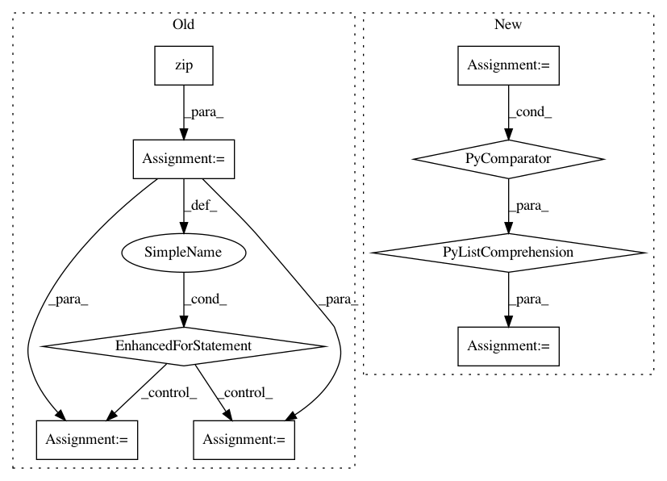

7ecc4a52faf0cc363e56f1fbb0e2109a76c7c8cb,mne/io/fiff/raw.py,Raw,__init__,#Raw#Any#Any#Any#Any#,77
Before Change
// Add annotations for in-data skips
offsets = [0] + self._raw_lengths[:-1]
for extra, first_samp, offset in zip(self._raw_extras,
self._first_samps, offsets):
for skip in extra:
if skip["ent"] is None: // these are skips
if self.annotations is None:
self.set_annotations(Annotations((), (), ()))
start = skip["first"] - first_samp + offset
stop = skip["last"] - first_samp + offset
self.annotations.append(
_sync_onset(self, start / self.info["sfreq"]),
(stop - start + 1) / self.info["sfreq"],
"BAD_ACQ_SKIP")
if preload:
self._preload_data(preload)
else:
self.preload = False
After Change
// Add annotations for in-data skips
for extra in self._raw_extras:
start = np.array([e["first"] for e in extra if e["ent"] is None])
stop = np.array([e["last"] for e in extra if e["ent"] is None])
duration = (stop - start + 1.) / self.info["sfreq"]
annot = Annotations(onset=(start / self.info["sfreq"]),
duration=duration,
description="BAD_ACQ_SKIP",
orig_time=self.info["meas_date"])
if self.annotations is None:
self.set_annotations(annot)
else:
In pattern: SUPERPATTERN
Frequency: 3
Non-data size: 9
Instances
Project Name: mne-tools/mne-python
Commit Name: 7ecc4a52faf0cc363e56f1fbb0e2109a76c7c8cb
Time: 2018-09-13
Author: mailsik@gmail.com
File Name: mne/io/fiff/raw.py
Class Name: Raw
Method Name: __init__
Project Name: pantsbuild/pants
Commit Name: bf9599809214cbc3082eb7f39c0ad3155822a2c5
Time: 2014-02-12
Author: benjy@foursquare.com
File Name: src/python/twitter/pants/tasks/jvm_compile/scala/zinc_analysis.py
Class Name: ZincAnalysis
Method Name: split
Project Name: has2k1/plotnine
Commit Name: 6c8d301d19b62d966148a3a1409e05ba84d5ea50
Time: 2015-06-02
Author: has2k1@gmail.com
File Name: ggplot/geoms/geom_path.py
Class Name:
Method Name: _draw_segments